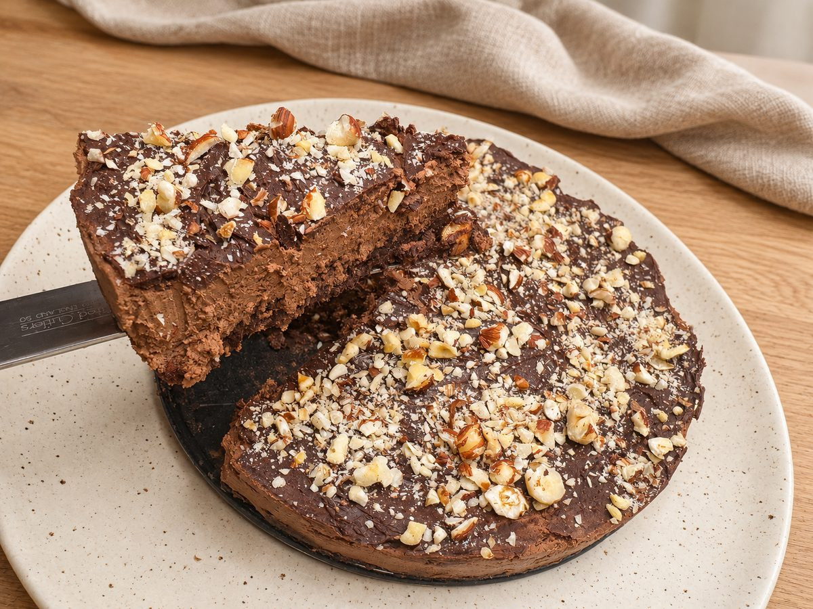
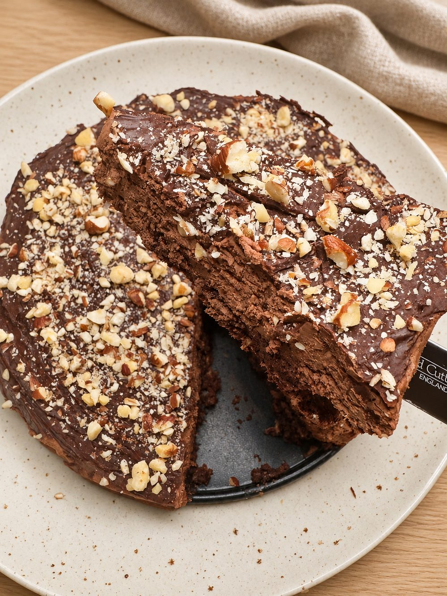
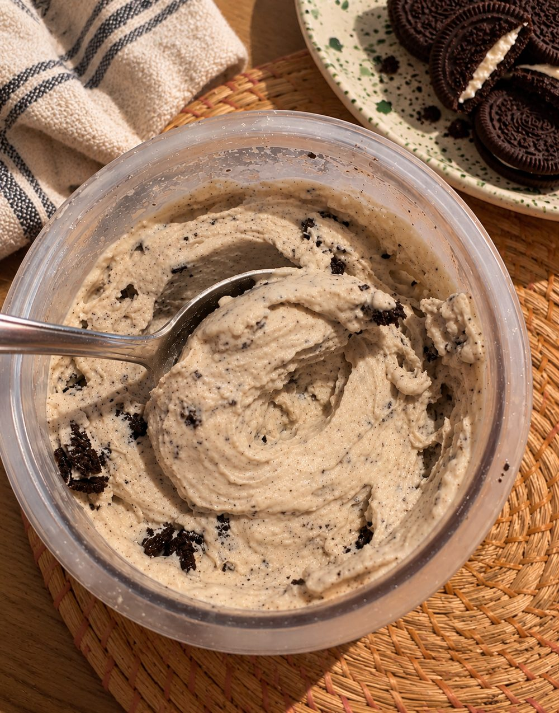
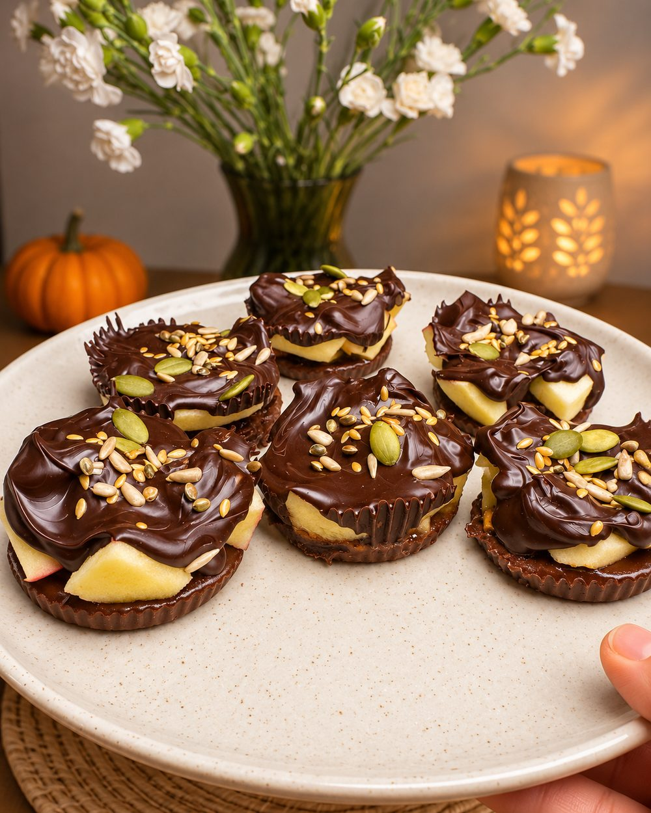
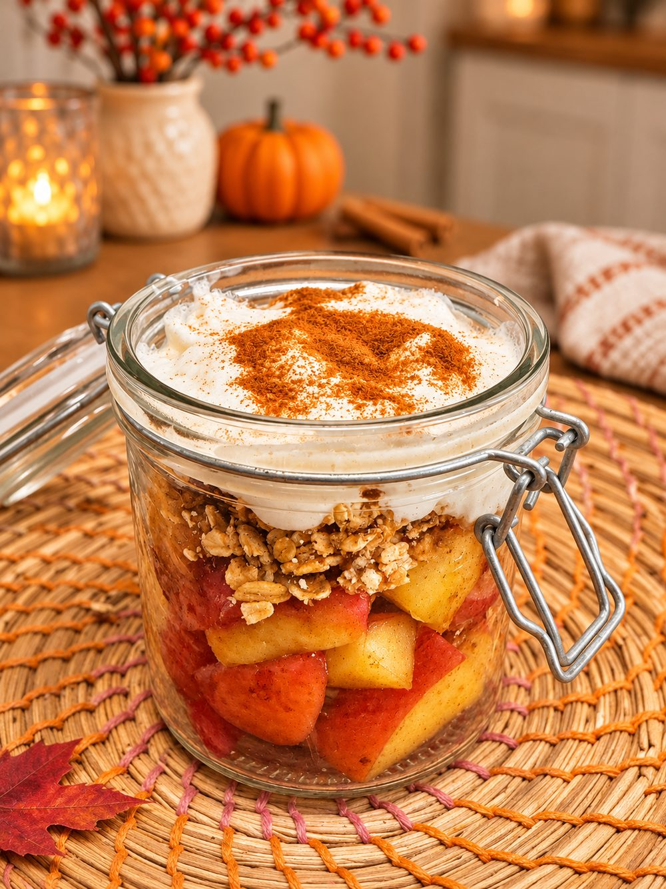

Welcome to The Better Bite
Hi, I'm Em!
Healthy eating, decoded. Better-for-you, high-protein recipes that still taste like the treat you were craving, with protein listed on every recipe.

8g proteinFestive pick!No bakeHealthyish Ferrero Rocher Pie
Recipes
Pick a craving!

8g proteinNo bakeHealthyish Ferrero Rocher Pie
 6 recipesTaste test
6 recipesTaste testI Tried 6 Healthy Chocolate Mousse Recipes
 20g protein4 ingredients
20g protein4 ingredientsBiscoff Banana Bread Pudding
 31g proteinTastes like a Snickers!
31g proteinTastes like a Snickers!Chocolate Peanut Yogurt Bowl
 6g protein7 ingredients
6g protein7 ingredientsHealthyish Marble Cake
 ~210 kcalNo bake
~210 kcalNo bakeChocolate Pistachio Truffles
 25g protein3 ingredients
25g protein3 ingredientsCaramel Almond Crunch Bowl
 25g proteinBlender
25g proteinBlenderProtein Coffee Frappuccino
 9g proteinNinja Creami
9g proteinNinja CreamiBrownie Batter Ninja Creami

7g proteinNinja CreamiOreo Cheesecake Ninja Creami
 18g proteinNo ice cream maker
18g proteinNo ice cream makerBlueberry Protein Froyo
 13g proteinReady in 2 mins
13g proteinReady in 2 minsMango Cheesecake Protein Pot
 17g proteinAir fryer
17g proteinAir fryerPre-Run Protein Toast

~280 kcalNo bakeChocolate Apple Cups
 14g proteinNo bake
14g proteinNo bakeViral Apple Salad
 4g protein2 ingredients
4g protein2 ingredientsApple Brownie for One
 ~160 kcalAir fryer
~160 kcalAir fryerRice Paper Apple Pie

21g proteinBreakfastApple Crumble Breakfast Oats
No recipes match “” yet. Try another ingredient.
Nice to meet you!
About The Better Bite by Em
I'm Em, and I make high-protein versions of the snacks and sweet things I actually want to eat. Everything here uses ingredients from a normal supermarket shop, and every recipe lists the protein or calories per serving so it's easy to fit into your day.
- Protein finds
- Smarter swaps
- Easy recipes
- Tips + explainers
- Honest rankings
- Protein Snack HackClassic snacks, made higher protein
- Apple a Day SeriesFive apple recipes for apple season
- Food Myths: True or False?Swipe to test yourself
- Snack ReviewsHonest ratings, scored out of 10
Say hi!
Get in touch
For collabs and brand work, questions about a recipe, or just to tell me you made something, drop me an email or send me a DM on Instagram.